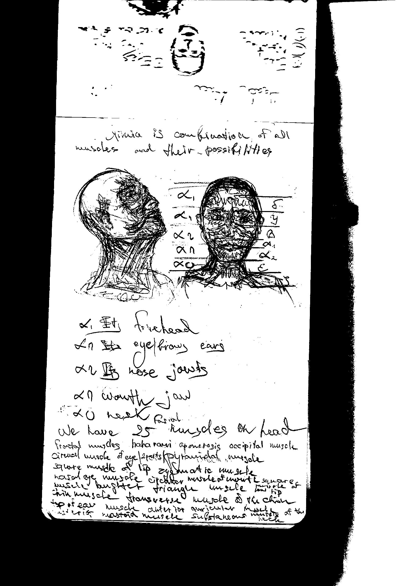
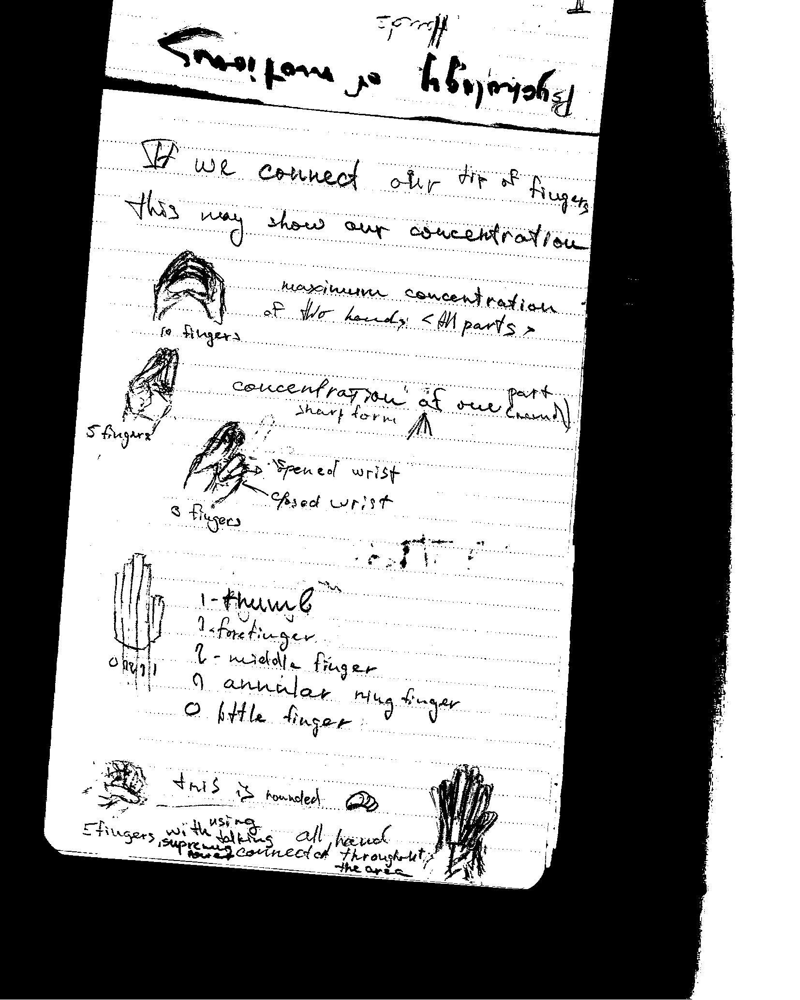

Date: 18 May 2019

Psychology

Date: 3 June 2019
Date: 18 May 2019
Psychology
Date: 3 June 2019
I wish that people understand that psychologist – everyone.
All what we see we try to analyze and all humans have thought about others. I do not know people who cannot describe someone. I think that the biggest difference between qualified psychologist/ psychotherapist and simple human. Simple human cannot describe how they understand it and describe their position. I may said that marketing managers work with psycho in first and only after – demand. All professions connect in psych types and good professionals may describe it.
I want to popularize psychology like something that may not to be definitely systematic. It may be more abstract because when we talk with humans we may see many gestures and action by body, that may said more than we can imagine. I think that world have not perfect psychologist but together can do in this way.
After all, of my researching I find a lot of combinatory with chance in psycho. There are goosebumps or comb. Sounds from stomach and other physical reaction for environment by thinking.
I may say about it at the moment no more than all of this have sense. I need to take over interest and train possibilities to talk with myself. It may be strange but it is the most powerful discipline. We need to understand what body language talk to us.
This language may be in all mammals. My thought about this position contain only environment researching, I cannot read a lot of about psychology because it have not constants.
This is not solo project. I want to make constant sense in all my concepts and projects.
We have no truth anyway and all chance that we see [For example: fallen book from bookshelf that show for us word that we could not remember].
There are not a chance, there are combination of science, but I think about it more and more. I cannot describe it and I think that no one cannot do it. It is a chance that we call like god.
About chance one more sentence. I do not believe to something, that we cannot describe or understand, but it is and we describe it sometime when people will know more about environment all-around.
Psychology is the most powerful science that describe humans. I do not believe that humans may live without chance and there are may be psychology of chance. I really want to write book about it after, when I will be older and collect more self-researching about environment at all.
There are the fewest description of my emperic base, I think I may start small book.